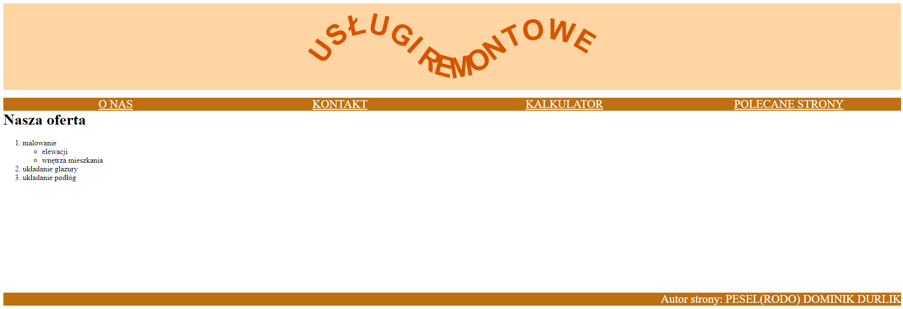
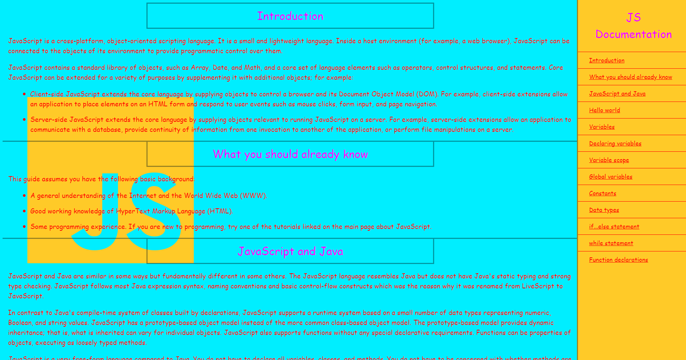
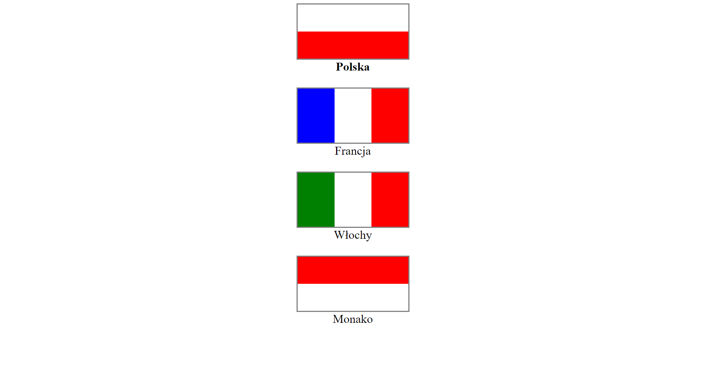
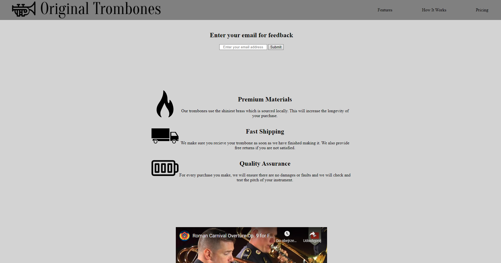
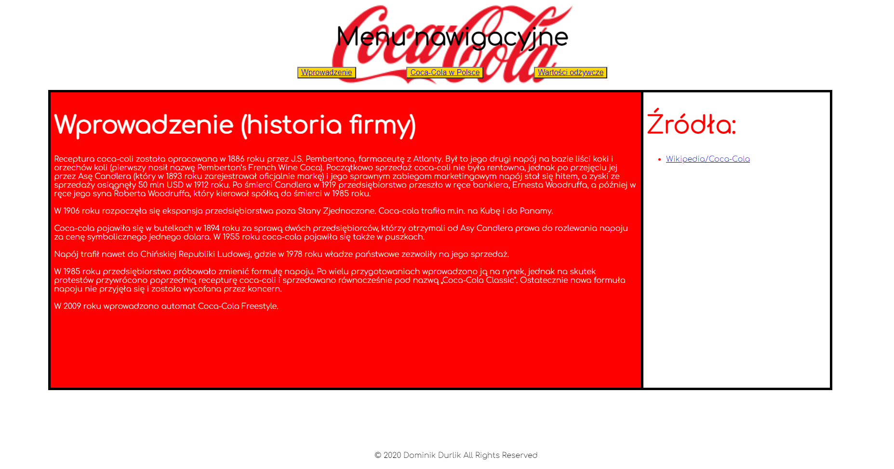
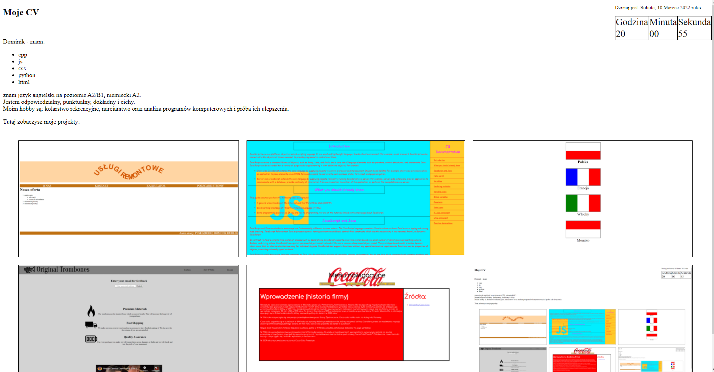

Moje CV
Dominik - znam:
cpp
js
css
python
html
znam język angielski na poziomie A2/B1, niemiecki A2.
Jestem odpowiedzialny, punktualny, dokładny, lecz cichy.
Moim hobby są: kolarstwo rekreacyjne, narciarstwo oraz analiza programów komputerowych i próba ich ulepszenia.
Dzisiaj jest:
Godzina
Minuta
Sekunda
Tutaj zobaczysz moje projekty:






Oceń mój projekt:
6
5
4
3
2
1